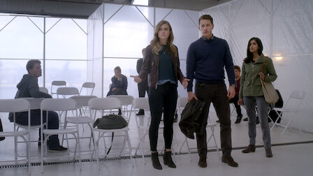
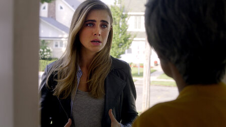
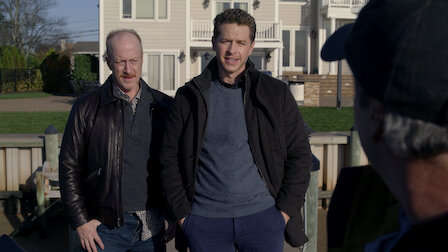
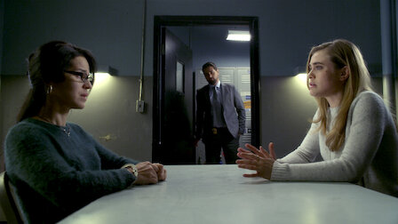

Watch all you want.
Melissa Roxburgh, Josh Dallas and J.R. Ramirez star in this
supernatural
drama created by Jeff Rake.
Videos | Manifest
' '
' '
' '
' '
' '
' '
 Episode 825m
Episode 825m
Episodes | Manifest
Season 1
Releasing Year:2018
When a plane mysteriously lands years after takeoff, the people onboard return to a world
that has moved on without them and face strange new realities.
Episode 1 75m
Flight 828 arrives in New York with passengers who are unaware they’ve been
missing for years as a mysterious phenomenon influences their behavior.

Episode 224m
The NSA interrogates the people on Flight 828 as they try to resume their
lives. One passenger falls victim to a crime after speaking to the media.

Episode 325m
Michaela visits Evie's parents, who struggle with their loss. Twin siblings
Cal and Olive try to reconnect after five and a half years apart.
Episode 426m
Michaela misinterprets her latest vision, landing her ex-fiancé Jared in
trouble. Ben and Saanvi seek out a flight attendant from Flight 828.
Episode 526m
Flashbacks reveal how loved ones coped after Flight 828's disappearance. To
escape the voice in his head, Ben goes on an adventure with Cal.
Episode 626m
When Cal develops a fever and begins speaking another language, Ben sets out
to find a cure by searching for another passenger from the plane.
Episode 725m
Ben investigates the whereabouts of 11 missing passengers from Flight 828.
After her latest Calling, Michaela makes a shocking discovery.
Episode 825m
Ben finds an unlikely partner in NSA Director Vance while locating the
missing passengers. Michaela has a strange Calling and Cal goes back to school.
Episode 925m
As Ben and Michaela race to save the other missing passengers, their risky
rescue mission takes an unexpected turn.
Episode 1025m
Mourning the loss of an ally, Ben forms a new alliance to help identify a
shadowy figure who may be responsible for the missing passengers.

Episode 1125m
Cal’s Calling sends Ben to help the captain of Flight 828, who is desperate
to prove that he wasn't responsible for the plane's disappearance.

Episode 1225m
When Cal goes missing, Grace and Ben head to upstate New York to find him as
a mysterious hiker appears. Michaela confronts Autumn.
Episode 1225m
Michaela digs deeper for more information on Zeke. Jared investigates a man
who runs a conspiracy website about the Flight 828 passengers..
Episode 1225m
Saanvi meets a member of a group that believes the Flight 828 passengers can
perform miracles. Cal and Zeke have ominous Callings.